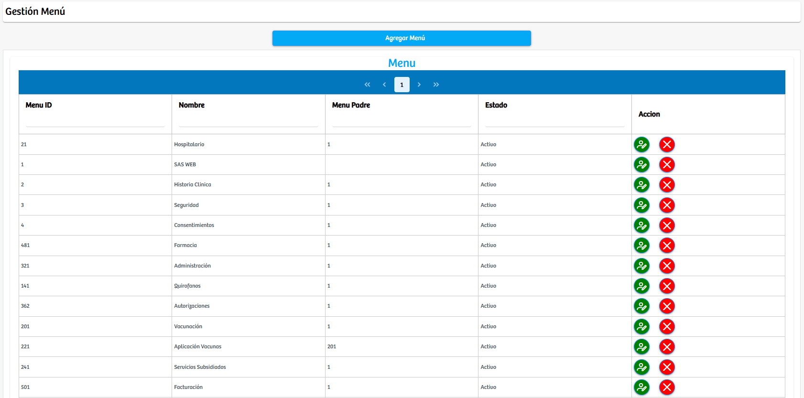

Modulos Sas-Web
Funcionalidades
Gestion del Menu
En este modulo del apartado seguridad, se puede configurar y gestionar el menú. Al principio sale un boton el cual nos deja agregar otro menú si es el caso, o si solo se quiere visualizar la información de los registros que ya existen, abajo hay una tabla con: Menú ID, nombre, menú padre, estado y acciones que es el espacio donde podremos encontrar los botones para actualizar un menú o eliminarlo.
